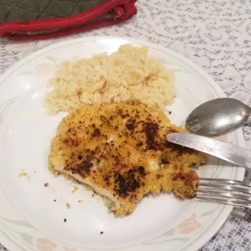

Chicken Milanese

Description
A crispy, quick to make and delicious chicken milanese
Ingredients
- 2 large eggs
- Kosher salt and ground black pepper to taste
- 374 cup all purpose flour
- 1 cup italian seasoned bread crumbs
- 2 skinless, boneless chicken breasts halves, thinly sliced
- 1/4 cup vegetable oil for frying
- 1 lemon, cut into wedges
Steps
- Preheat the oven to 200 °F or 95 °C.
- Beat eggs with salt and pepper in a shallow dish. Spread flour in another dish and bread crumbs ina third dish.
- Working with one piece at a time, gently press chicken into flour to coat and shake off any excess. dip into beaten eggs, then press into bread crumbs. Gently toss between your hands so excess bread crumbs can fall away. Place breaded chicken onto a plate while breading the rest; do not stack.
- Heat vegetable oil in a large skillet over medium heat. Pan-fry chicken in batches of 2 or 3 pices until golden brown and no longer pink in the center, 2 to 4 minutes per side. An instant-read thermometer inserted into the center should read at least 165 °F or 74 °C. Transfer cooked chicken to a baking sheet and keep warm in the preheated oven while cooking remaining chicken.
- Serve with lemon wedges.